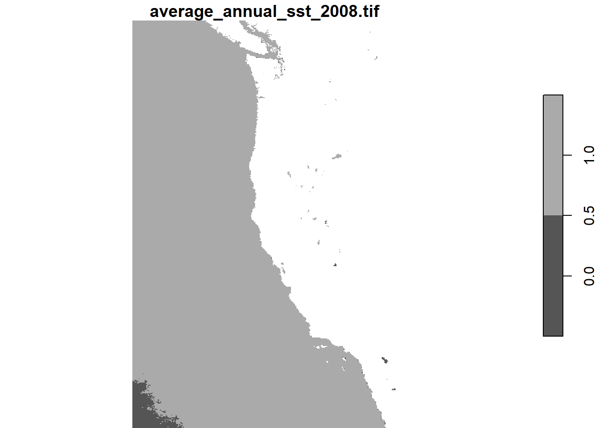
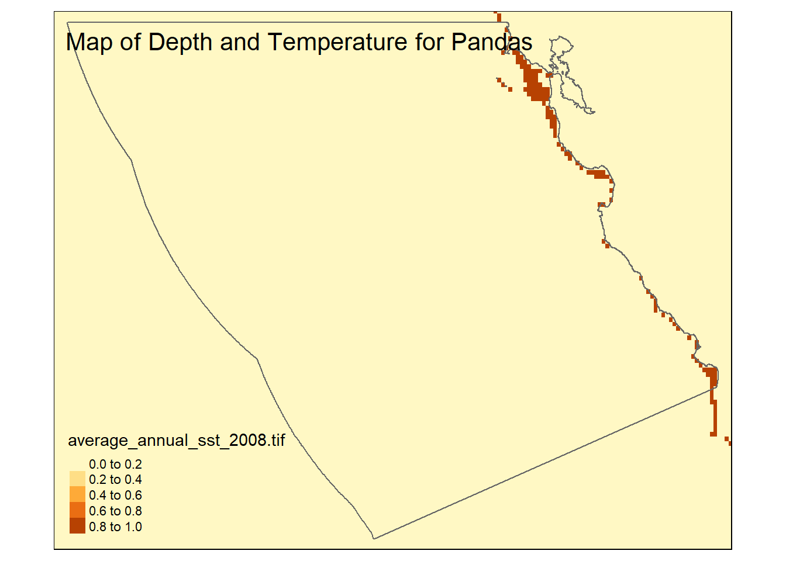

# Load libraries
library(tidyverse)
library(here)
library(tmap)
library(ggplot2)
library(stars)
library(spDataLarge)
library(FNN)eds223_hw4_Aoverbye
Homework Assignment 4
Prioritizing potential aquaculture
Creating A Function
“To make your workflow generalizable, you must create a function that has the following characteristics:
arguments:
- minimum and maximum sea surface temperature
- minimum and maximum depth species name
outputs:
- map of EEZ regions colored by amount of suitable area species
- species name should be included in the map’s title
Prepare data
# Load data
# Read in NOAA Sea Surface Temperature files
sst_avg2008 <- read_stars(here("data", "average_annual_sst_2008.tif"))
sst_avg2009 <- read_stars(here("data", "average_annual_sst_2009.tif"))
sst_avg2010 <- read_stars(here("data", "average_annual_sst_2010.tif"))
sst_avg2011 <- read_stars(here("data", "average_annual_sst_2011.tif"))
sst_avg2012 <- read_stars(here("data", "average_annual_sst_2012.tif"))
# Read in Bathymetry files
depth <- read_stars(here("data", "depth.tif"))
# Load wc_regions shape file
wc_regions_clean <- st_read(here("data", "Wc_regions_clean.shp"))Reading layer `wc_regions_clean' from data source
`C:\MEDS\eds223\hw4-Aoverbye\data\wc_regions_clean.shp' using driver `ESRI Shapefile'
Simple feature collection with 5 features and 5 fields
Geometry type: MULTIPOLYGON
Dimension: XY
Bounding box: xmin: -129.1635 ymin: 30.542 xmax: -117.097 ymax: 49.00031
Geodetic CRS: WGS 84Stacking Rasters
Write about why stacking rasters is useful
** Write about why we crop rasters**
# Crop all rasters to the extent of the first raster
sst_avg2009 <- st_crop(sst_avg2009, st_bbox(sst_avg2008))
sst_avg2010 <- st_crop(sst_avg2010, st_bbox(sst_avg2008))
sst_avg2011 <- st_crop(sst_avg2011, st_bbox(sst_avg2008))
sst_avg2012 <- st_crop(sst_avg2012, st_bbox(sst_avg2008))# Stacking Rasters
sst_avg_stack <- c(sst_avg2008, sst_avg2009, sst_avg2010, sst_avg2011, sst_avg2012)# Plot to view
plot(sst_avg_stack)
Preliminary Data Exploration
My first step in this project is getting an overview of the data I am. I do this by looking at the first 5 rows(head) of any shape files and by doing a quick plot of the tif files.
# View the column names of the wc_regions data
print(colnames(wc_regions_clean))[1] "rgn" "rgn_key" "area_m2" "rgn_id" "area_km2" "geometry"print(head(wc_regions_clean))Simple feature collection with 5 features and 5 fields
Geometry type: MULTIPOLYGON
Dimension: XY
Bounding box: xmin: -129.1635 ymin: 30.542 xmax: -117.097 ymax: 49.00031
Geodetic CRS: WGS 84
rgn rgn_key area_m2 rgn_id area_km2
1 Oregon OR 179994061293 1 179994.06
2 Northern California CA-N 164378809215 2 164378.81
3 Central California CA-C 202738329147 3 202738.33
4 Southern California CA-S 206860777840 4 206860.78
5 Washington WA 66898309678 5 66898.31
geometry
1 MULTIPOLYGON (((-123.4318 4...
2 MULTIPOLYGON (((-124.2102 4...
3 MULTIPOLYGON (((-122.9928 3...
4 MULTIPOLYGON (((-120.6505 3...
5 MULTIPOLYGON (((-122.7675 4...# Plot bathymetry data
plot(depth)
I am only going to show one plot of the surface temperature data because that is all I need right now to get an idea of how it will look.
# Plot the temperature data
plot(sst_avg2008)
Processing The data!
find the mean SST from 2008-2012 (e.g. create single raster of average SST)
convert average SST from Kelvin to Celsius
hint: subtract by 273.15
First we want to get the mean over all the years.
sst_mean <- st_apply(sst_avg_stack, c("x", "y"), FUN = mean)
# Select a single attribute using dplyr::select
sst_mean <- sst_mean %>% select("average_annual_sst_2008.tif")Then we want to view the plot to ensure we did not destroy the data in the process.
# View plot
plot(sst_mean)
Our original temperature data is in Kelvin, but most people don’t use Kelvin so we will change it to Celsius by subtracting 273.5.
# Transfer to Celsius
celsius_mean_sst <- sst_mean - 273.15WE MAY HAVE AN ISSUE LATER AND IT MAY HAVE TO DO WITH WARPING
Cropping Rasters
Next, we need to process the SST and depth data so that they can be combined. In this case the SST and depth data have slightly different resolutions, extents, and positions.
Extent
In basic terms, the extent of the raster is the box around the geographic area it covers. It wouldn’t be useful if the two maps covered completely separate areas. One of the easiest ways to fix mis-match extents is just to create a bounding box. A bounding box will make it so only the data within a certain geographical region will be used. For this I will take the dataset with the larger extent (depth) and crop it to match the extent of the other dataset(celsius_mean_sst). Normally this would mean the dataset with the smaller extent then becomes the bounding box.
# Crop the depth data to the mean_sst_celsius data
cropped_depth <- st_crop(depth, st_bbox(celsius_mean_sst))Resolution
Talk about resolution
When working with maps resolution is basically how detailed the image is. Making sure the resolution between our maps is the same is important. If we don’t pay attention to resolution we can get maps that look weird and are inaccurate. Its like photoshoping a very pixelated image onto a very clear image, it looks weird and we can tell its wrong.
Like before we are going to try a function for this as well.
# Function to determine if Resolutions match
check_res_fun <- function(d1, d2) {
if (identical(st_dimensions(d1), st_dimensions(d2))) {
return(print("Resolutions match!"))
} else {
return(print("Resolutions do not match"))
}
}# Use the function to check the resolutions
check_res_fun(cropped_depth, celsius_mean_sst)[1] "Resolutions do not match"I can see that are resolutions do not match, so I must make them match myself.
# Resample the depth data to the mean_sst_celsius data using the near method
resampled_depth <- st_warp(cropped_depth, celsius_mean_sst, method = "near")
# Check if the resolutions match now
check_res_fun(resampled_depth, celsius_mean_sst)[1] "Resolutions match!"So now the resolutions match.
cropped_depth <- st_crop(resampled_depth, st_bbox(celsius_mean_sst))In the process of matching everything, I made several different variables representing the changes I make particularly to the depth variable. In order to avoid confusion, I am going to re-assign the names.
# Re-assign cropped_depth
depth_clean <- cropped_depth
sst_clean <- celsius_mean_ssttest_stack <- c(depth_clean, sst_clean)CRS systems
One of things I have learned is that mismatching CRSs is one of the things that will derail me the most when I am trying to work with geographical data sets. Lots of weird things can happen when coding and I think in projects like these about 90% of those things are caused by CRS troubles. If I were ever caught in the bad place, one of the signs would be mis-matched CRSs.
In order to prevent these troubles, I will write a function that will tell me if data sets have mismatching CRSs
# Function to determine if CRSs match
check_crs_fun <- function(d1, d2) {
if (identical(st_crs(d1), st_crs(d2))) {
return(print("CRSs match!"))
} else {
return(print("CRSs do not match"))
}
}Then we can check our data sets:
check_crs_fun(depth_clean, sst_clean)[1] "CRSs match!"check_crs_fun(depth_clean, wc_regions_clean)[1] "CRSs do not match"check_crs_fun(wc_regions_clean, sst_clean)[1] "CRSs do not match"Here we can see that none of our CRSs match.
Our next step will be to change the CRSs so they are consistent. We will do this by creating a function that will change the CRS of the first inputted dataset to match the crs of the second inputted dataset. I am going to change the CRSs of the depth and wc_regions_clean datasets to match the sst_avg datasets.
change_crs_fun <- function(df1, df2) {
if (identical(st_crs(df1), st_crs(df2))) {
print("no change")
return(df1)
} else {
df1 <- st_transform(df1, st_crs(df2))
print("changed first dataset's CRS to match the second dataset's CRS")
return(df1)
}
}# Change the CRSs to match and store in new varibles
depth_clean <- change_crs_fun(depth_clean, sst_clean)[1] "no change"wc_regions_clean <- change_crs_fun(wc_regions_clean, sst_clean)[1] "changed first dataset's CRS to match the second dataset's CRS"# Check if the CRSs match now
check_crs_fun(depth_clean, sst_clean)[1] "CRSs match!"check_crs_fun(wc_regions_clean, sst_clean)[1] "CRSs match!"All of our CRSs should be the same now. By check st_crs(sst_avg2008), I can see that the CRS the sst_avg2008 uses is EPSG 9122. So I will now create a warning message that will tell me if there CRS is not 9122.
# Create crs warning function
crs_warning <- function(df) {
# Check if the CRS is different from EPSG:9122
if (st_crs(df) != st_crs(sst_avg2008)) {
warning("Warning: The CRS of the dataset is not EPSG:9122!")
} else {
message("The CRS is EPSG:9122.")
}
}Because we stacked the rasters, we want to ensure that the CRSs will still match what we had before, so we are going to run our CRS matching function again.
crs_warning(sst_avg_stack)Find suitable locations
# Reclassify SST (keep logical 1/0 format)
suitable_sst <- (celsius_mean_sst >= 8 & celsius_mean_sst <= 18)
# Convert the logical values (TRUE/FALSE) to integers (1/0) and preserve the stars format
suitable_sst <- st_apply(suitable_sst, c("x", "y"), function(x) as.integer(x))plot(suitable_sst)
# Reclassify Depth (keep logical 1/0 format)
suitable_depth <- (depth_clean >= -24 & depth_clean <= 0)
# Convert logical values (TRUE/FALSE) to integers (1/0)
suitable_depth <- st_apply(suitable_depth, c("x", "y"), function(x) as.integer(x))plot(suitable_depth)
suitable_locations <- suitable_sst * suitable_depthMessing around
head(wc_regions_clean)Simple feature collection with 5 features and 5 fields
Geometry type: MULTIPOLYGON
Dimension: XY
Bounding box: xmin: -129.1635 ymin: 30.542 xmax: -117.097 ymax: 49.00031
Geodetic CRS: WGS 84
rgn rgn_key area_m2 rgn_id area_km2
1 Oregon OR 179994061293 1 179994.06
2 Northern California CA-N 164378809215 2 164378.81
3 Central California CA-C 202738329147 3 202738.33
4 Southern California CA-S 206860777840 4 206860.78
5 Washington WA 66898309678 5 66898.31
geometry
1 MULTIPOLYGON (((-123.4318 4...
2 MULTIPOLYGON (((-124.2102 4...
3 MULTIPOLYGON (((-122.9928 3...
4 MULTIPOLYGON (((-120.6505 3...
5 MULTIPOLYGON (((-122.7675 4...central_california <- wc_regions_clean %>%
filter(rgn == "Central California") # Filter by the region name
# Step 2: Get the bounding box of Central California
central_california_bbox <- st_bbox(central_california)
# Print the bounding box
print(central_california_bbox) xmin ymin xmax ymax
-127.90688 33.59882 -120.63050 38.28022 # Check for NA values
summary(suitable_locations) Length Class Mode
average_annual_sst_2008.tif 195840 -none- numeric# Remove NA values if necessary
suitable_locations_clean <- suitable_locations
suitable_locations_clean[is.na(suitable_locations_clean)] <- 0 # or any other value you prefer
locations <- st_as_stars(suitable_locations_clean)
# Now plot
tm_shape(central_california) +
tm_borders() + # Add borders to the bounding box
tm_shape(locations) +
tm_raster() +
tm_shape(central_california) +
tm_borders()
suitable_locationsstars object with 2 dimensions and 1 attribute
attribute(s):
Min. 1st Qu. Median Mean 3rd Qu. Max. NA's
average_annual_sst_2008.tif 0 0 0 0.00466948 0 1 82337
dimension(s):
from to offset delta refsys point x/y
x 1 408 -132 0.04166 WGS 84 FALSE [x]
y 1 480 49.99 -0.04166 WGS 84 FALSE [y]tm_shape(central_california) +
tm_polygons() +
tm_shape(sst_mean) +
tm_raster() 
# Select a single attribute using dplyr::select
sst_mean <- sst_mean %>% select("average_annual_sst_2008.tif")Test can delete later
create_suitable_area_map <- function(min_sst, max_sst, min_depth, max_depth, species_name, sst_raster, depth_raster, eez_shapefile) {
# Step 1: Ensure the CRS consistency
if (st_crs(sst_raster) != st_crs(eez_shapefile)) {
eez_shapefile <- st_transform(eez_shapefile, st_crs(sst_raster))
}
# Step 2: Filter the SST and Depth raster to get suitable cells based on input thresholds
suitable_sst <- st_as_stars(sst_raster >= min_sst & sst_raster <= max_sst)
suitable_depth <- st_as_stars(depth_raster >= min_depth & depth_raster <= max_depth)
# Combine the suitable SST and depth conditions
suitable_area <- suitable_sst & suitable_depth
# Step 3: Convert suitable area to a stars object
suitable_area_stars <- st_as_stars(suitable_area)
# Step 4: Rasterize the EEZ shapefile to match the suitable area
eez_raster <- st_rasterize(eez_shapefile, suitable_area_stars, fun = "first")
# Step 5: Calculate the area of each cell in square meters
suitable_area_with_cells <- st_as_sf(suitable_area_stars, as_points = TRUE)
if (nrow(suitable_area_with_cells) == 0) {
stop("No suitable area cells found.")
}
suitable_area_with_cells$cell_area <- st_area(suitable_area_with_cells)
# Step 6: Intersect with the EEZ regions to calculate the total suitable area by region
intersected_area <- st_intersection(suitable_area_with_cells, eez_shapefile)
if (nrow(intersected_area) == 0) {
stop("No intersection found between suitable area and EEZ regions.")
}
intersected_area$region_area <- st_area(intersected_area) / 1e6 # Convert to km²
# Summing up the area by region
suitable_area_by_eez <- intersected_area %>%
group_by(rgn) %>%
summarise(total_area_km2 = sum(region_area, na.rm = TRUE))
# Step 7: Create the map using tmap
map <- plot(suitable_area_by_eez)
print(map)
}# Example usage of the function
min_sst <- 8 # Minimum sea surface temperature (°C)
max_sst <- 18 # Maximum sea surface temperature (°C)
min_depth <- 50 # Minimum depth (meters)
max_depth <- 200 # Maximum depth (meters)
species_name <- "Sample Species"
# Call the function with corrected inputs
suitable_map <- create_suitable_area_map(
min_sst, max_sst, min_depth, max_depth, species_name,
sst_clean, depth_clean, wc_regions_clean
)
NULLDetermine the most suitable EEZ
Citations
Data
Flanders Marine Institute (VLIZ). (n.d.). Exclusive Economic Zone (EEZ) boundaries. Maritime Boundaries Database, version unknown. Retrieved from https://www.marineregions.org/eez.php (Accessed: November 29, 2024)
General Bathymetric Chart of the Oceans (GEBCO) Compilation Group. (2022). GEBCO_2022 Grid [Data set]. https://doi.org/10.5285/e0f0bb80-ab44-2739-e053-6c86abc0289c (Accessed: November 29, 2024)
National Oceanic and Atmospheric Administration (NOAA). (2018). Daily Global 5km Satellite Sea Surface Temperature Anomaly (Version 3.1). NOAA Coral Reef Watch. Retrieved from https://coralreefwatch.noaa.gov/product/5km/index_5km_ssta.php (Accessed: November 29, 2024)